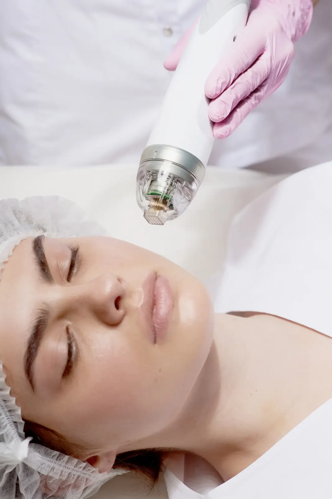

Все аппаратные лифтинги работают по одному принципу: прогревают ткани, чтобы запустить выработку собственного коллагена. Разница в том, на какой глубине и каким способом они это делают. Отсюда и разные показания, ощущения и восстановление.
На какой слой действует каждый метод
Кожу можно представить слоями: эпидермис, дерма, подкожная клетчатка и под ней — SMAS, мышечно-апоневротический слой. Именно его подтягивает хирург при пластической операции.
- HIFU фокусирует ультразвук в точках на заданной глубине, вплоть до слоя SMAS. Поверхность кожи при этом почти не затрагивается.
- Микроигольчатый RF вводит микроиглы на выбранную глубину и отдаёт радиочастотную энергию в дерму и подкожную клетчатку.
- RF без игл прогревает кожу через поверхность. Действие мягче и поверхностнее.
| SMAS-лифтинг HIFU | Микроигольчатый RF | RF без игл | |
|---|---|---|---|
| Аппараты в Aldo Coppola | Ultraformer, Liftera-A | Morpheus8, EndyMed, Scarlet RF | Volnewmer, EndyMed, Forma, Maximus, So Up |
| Главная задача | контур, нижняя треть лица | контур + качество кожи | тонус, профилактика |
| Восстановление | обычно не нужно, возможна краснота | покраснение и небольшой отёк на несколько дней | не нужно |
| Цена в Aldo Coppola | от 30 000 ₽ | от 33 800 ₽ | от 9 400 ₽ |
Когда выбирают SMAS-лифтинг HIFU
Если появились первые признаки опущения контура: нечёткий овал, «брыли», мягкость в зоне подбородка. HIFU работает глубоко, поэтому подходит для задач, связанных с поддерживающим каркасом лица.
Эффект развивается постепенно, по мере того как кожа вырабатывает новый коллаген. Итоговый результат обычно оценивают через несколько недель, поэтому перед важным событием процедуру планируют заранее — например, к Новому году.

Когда выбирают микроигольчатый RF
Если кроме контура беспокоит качество кожи: расширенные поры, неровный рельеф, следы постакне, растяжки. Микроиглы доставляют энергию точно в нужную глубину, поэтому метод работает и на подтяжку, и на текстуру.
После процедуры бывает покраснение и небольшой отёк. Обычно они проходят за несколько дней, но в это время лучше не планировать мероприятия.
Когда хватит RF без игл
Если задача — поддержать тонус и свежесть кожи, а выраженного опущения нет. Процедура мягкая, без восстановления, её можно делать курсом и сочетать с уходами.
Можно ли сочетать методы
Да, врачи часто комбинируют их: HIFU — для глубокого каркаса, RF — для качества кожи. Порядок и интервалы определяет врач, исходя из состояния кожи и противопоказаний.
Вопросы и ответы
Больно ли делать HIFU?
Ощущения зависят от зоны и чувствительности: обычно это точечное тепло и покалывание. Врач настраивает мощность и может предложить обезболивающий крем.
Как быстро виден результат?
Сразу после процедуры бывает лёгкий эффект подтяжки, но основной результат развивается в течение нескольких недель.
Что лучше: Ultraformer или Morpheus8?
Это разные методы для разных задач. Ultraformer (HIFU) работает глубже на контур, Morpheus8 (микроигольчатый RF) — на контур и качество кожи. Выбор делает врач.
Сколько стоит SMAS-лифтинг в Aldo Coppola?
От 30 000 ₽ в зависимости от зоны и салона. Актуальные цены — на странице процедуры.
Источники
- Прайсы центров красоты Aldo Coppola, ноябрь 2026. Цены указаны «от».
- American Society for Dermatologic Surgery (ASDS): обзоры по неинвазивной подтяжке кожи
- Каталог косметологии Aldo Coppola: аппараты и процедуры по салонам
Имеются противопоказания. Необходима консультация специалиста.